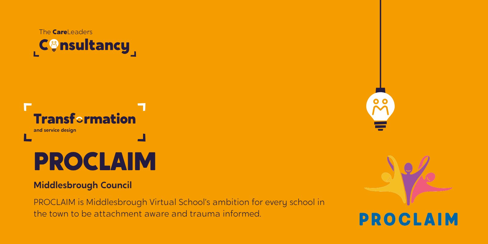

Middlesbrough Council: giving a town-wide trauma-informed schools programme its voice
PROCLAIM is Middlesbrough Virtual School’s ambition for every school in the town to be attachment aware and trauma informed. We were brought in to give it reach: the communications, the training platform, the films, and a way for young people to shape it.


The starting point
PROCLAIM (Providing Rich Opportunities to Children who are Looked After In Middlesbrough) is Middlesbrough Virtual School’s programme to make every school in the town attachment aware and trauma informed. The ambition needed reach across schools, families and council staff alike, and a way to bring young people into a programme built for them.
What we did
- StrategyA signed-off communications strategyCovering 2023 to 2025, agreed with the Virtual School in January 2024
- PlatformTraining content on The Care Leaders OnlineCPD-accredited courses rolled out to schools and settings across the town
- FilmFive filmsA main promotional film plus shorter films for parents, students, teachers and council staff
- Youth voiceA youth forum briefA co-produced forum design with young inspectors, to bring pupil voice into how the programme runs
- Development dayA facilitated sessionIn-person, December 2024, delivering the Four Ages Framework to the programme’s leaders
How we worked
Story
Every training session and film opened with real experience of what attachment and trauma mean for a child in care, not an abstract policy framing.
Theory
The evidence behind attachment-aware, trauma-informed practice, translated for teachers and support staff rather than specialists.
Tools
CPD schools and settings could complete in their own time, plus films short enough to use in a staff meeting or send to parents directly.
What changed
337 staff signed up to the training platform and 128 CPD certificates were issued, with course ratings between 4.14 and 4.75 out of 5. Five films were produced and edited: a main promotional film and shorter versions for parents, students, teachers and council staff. PROCLAIM’s own programme data reported 33.6% fewer suspension episodes across PROCLAIM schools compared with non-PROCLAIM schools, and 150.5 fewer days lost to suspension per pupil. These are the programme’s figures, not ours alone, and worth reading as evidence of what a town-wide approach can do rather than a claim about our training in isolation.
See the work
What we made, and what it looked like.
Development day
A town-wide day to give PROCLAIM its voice and bring every school in.
Training platform
337 staff signed up to the online training platform.
CPD certificates
128 CPD certificates issued to Middlesbrough staff.
Photos
Photos from the day to follow.